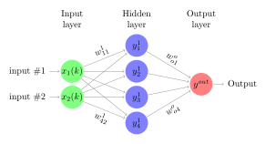

A Mathematical Rundown for Multiple Layer Perceptron (MLP)
This is a quick study notes of showing the MLP algorithm in pure mathematical form. Often times, these information were abstracted by the softwares people are using. In this notes, it will show how to compute the outputs of each layer from all the neurons by hand and through linear algebra to understand the computation process for forward passes and backward passes (backpropagation).
To begin with, We first construct a simple MLP structure. Assume there are two inputs for each sample, one hidden layer with four neurons, and one output layer with only one neuron. No bias term just to keep it simple.

To be continued...